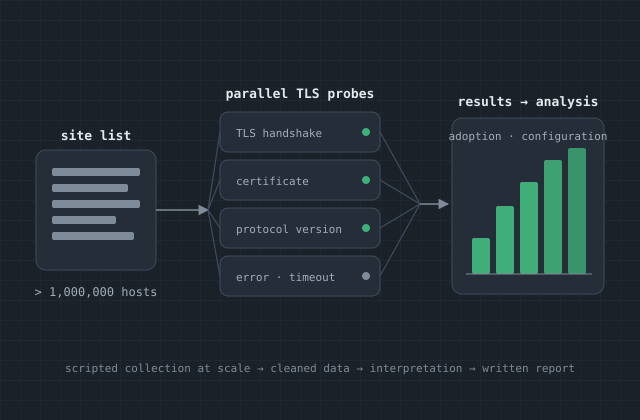
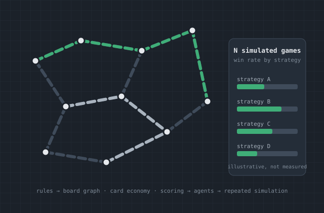
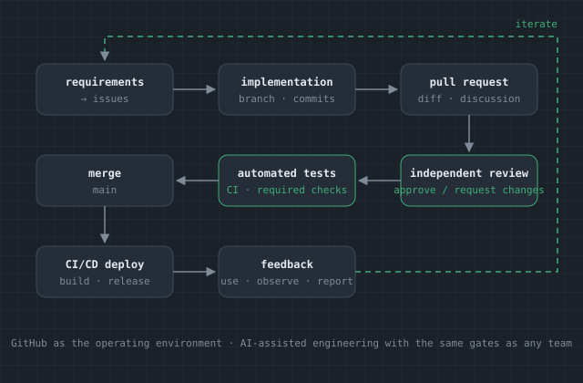

Build Difficult Software
Hands-on implementation across Java, C++, Python, web systems, cloud infrastructure, testing, integration, and deployment.
Software Engineer turning difficult technical problems into working software.
I work across the engineering lifecycle from research and requirements to implementation, testing, integration, deployment, and iteration.
What I Bring
Hands-on implementation across Java, C++, Python, web systems, cloud infrastructure, testing, integration, and deployment.
A foundation in mathematics, physics, electrical/computer engineering, modeling, signal processing, and research.
Requirements, customer interaction, demos, deployment, feedback, debugging, and iteration.
Technical leadership, mentoring, teaching, code review, presentations, and coordinating work without stepping away from engineering.
Professional Experience
Much of my professional work has been performed on government and defense programs and cannot be shared publicly.
Roster5
April 2026 – Present
Software Engineer
I joined Roster5 in April 2026 as a hands-on software engineer. Day to day, I am writing and shipping code on the company's programs: Java and Spring Boot services, TypeScript and modern web front ends, Cypress and other automated tests, and deployments on AWS and Kubernetes backed by DynamoDB and MongoDB.
Most of that work so far has been what a new engineer on a mature program should be doing: picking up tickets, learning the systems and their history, fixing real problems, and getting changes tested and into production while coming up to speed on the team's technologies.
AI-assisted development is part of my normal workflow, and I have become one of the internal technical voices helping Roster5 work out how to use it effectively and responsibly:
L3Harris Technologies
January 2020 – April 2026
Over six years at L3Harris I progressed from Associate to Specialist Software Engineer while staying on the implementation side of the work. I built electro-optical (EO) and synthetic aperture radar (SAR) software in C++, Python, and MATLAB on Linux, including GPU-accelerated image processing, signal processing, and geospatial systems.
The job ran the full lifecycle: turning customer requirements into designs, writing and reviewing code, debugging hard problems, packaging software in containers, integrating and testing it, managing configuration, and deploying to both GovCloud and on-premises environments. I regularly demonstrated working software to stakeholders and customers.
As the scope grew, so did the responsibility around the code. I led engineering efforts involving up to 20 people and served as product owner for three deployed solutions, while continuing to write software on those same systems. That combination of technical demos, customer engagements, and proposal work supported roughly $4M in annual program revenue.
Representative Engineering Work
These are selected public examples of my engineering work, chosen to demonstrate different technical skills and problem-solving approaches.

Case Study · Georgia Tech
Problem. How widely, and how well, is HTTPS/TLS actually deployed across the web, and what does the long tail of sites look like?
For a graduate network security project at Georgia Tech, I queried and analyzed more than one million websites to examine how HTTPS and SSL/TLS certificates are adopted and implemented by online services hosted in China. That meant building scripted, automated data collection that could run reliably at scale, storing and cleaning the results, analyzing adoption and configuration patterns, and then interpreting what the data did and did not say about the implications for both servers and clients. The findings were written up as a paper and presented.
What this demonstrates: technical research, automation at scale, network security, data analysis, and technical communication.

Case Study · Modeling & Simulation
Problem. Which strategies actually win in a rules-heavy board game, and how do you find out without playing thousands of games by hand?
Working with a team in MATLAB, I helped translate the full rule set of Ticket to Ride into a faithful simulation: train pieces, cards, routes, turns, and scoring. We then programmed artificial agents with distinct decision-making processes, ran hundreds of simulated games in which they competed against one another, and analyzed the performance metrics to identify the most successful, reliable, and complementary strategies. The project was as much about clear collaborative software design as it was about the algorithms.
What this demonstrates: modeling, simulation, algorithm design, collaborative software development, and translating complex systems into software.

Case Study · Modern Engineering
Problem. Can the ordinary machinery of professional software delivery keep an AI-driven team honest, reviewable, and shippable?
In a recent experiment I used GitHub itself as the operating environment for an AI-driven software team. A succession of independent Claude Code sessions act as product manager, developer, reviewer, QA engineer, release engineer, and maintainer, each orienting itself entirely from the repository, its issues, pull requests, review comments, and CI results. Requirements arrive as issues from a human customer; implementation lands through pull requests; every change goes through independent review, automated unit and browser tests, and lint and type checks; CI/CD deploys the result; and feedback on the deployed product feeds back into new issues. The product that emerged is a browser-based video editor. The point was not to remove engineering discipline but to show that the same Git-based workflow, tests, and review gates that make human teams reliable make AI-assisted engineering reliable too.
What this demonstrates: modern software delivery, AI-assisted engineering, Git-based workflows, automated testing, CI/CD, and iterative development.
Technical Foundation
Georgia Institute of Technology
Completed while working full-time at L3Harris and taking on substantial professional engineering responsibility.
Areas of study
University of Florida
The source of my analytical background, mathematical reasoning, modeling mindset, and scientific research experience.
How I Work
Explore More